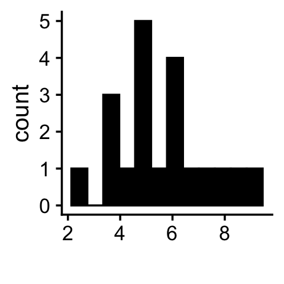
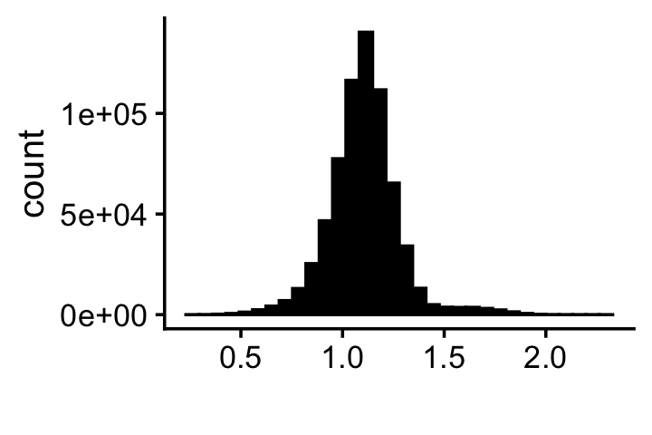
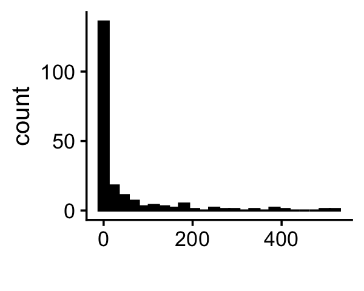
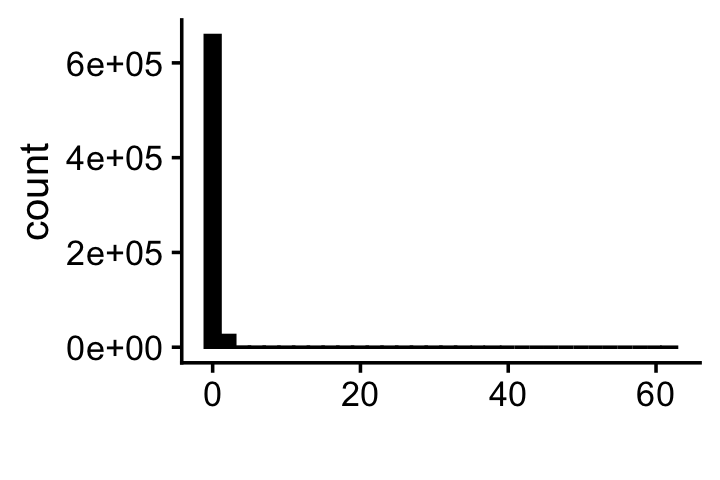
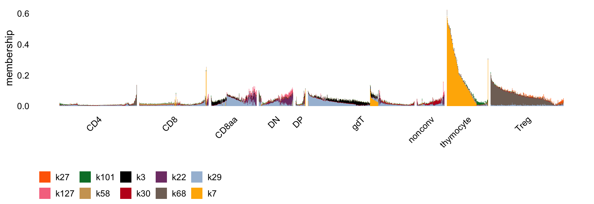
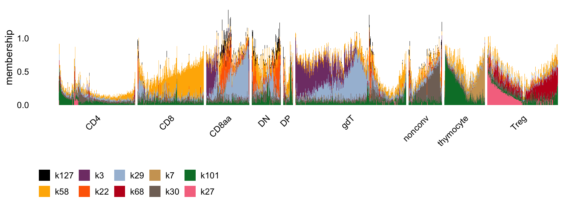
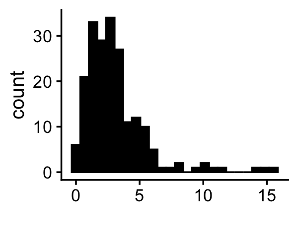
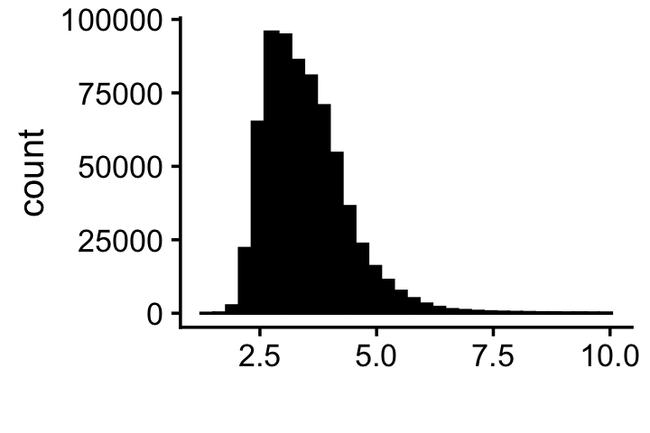

Last updated: 2025-10-15
Checks: 7 0
Knit directory: immgen-t-factors/analysis/
This reproducible R Markdown analysis was created with workflowr (version 1.7.1). The Checks tab describes the reproducibility checks that were applied when the results were created. The Past versions tab lists the development history.
Great! Since the R Markdown file has been committed to the Git repository, you know the exact version of the code that produced these results.
Great job! The global environment was empty. Objects defined in the global environment can affect the analysis in your R Markdown file in unknown ways. For reproduciblity it’s best to always run the code in an empty environment.
The command set.seed(1) was run prior to running the
code in the R Markdown file. Setting a seed ensures that any results
that rely on randomness, e.g. subsampling or permutations, are
reproducible.
Great job! Recording the operating system, R version, and package versions is critical for reproducibility.
Nice! There were no cached chunks for this analysis, so you can be confident that you successfully produced the results during this run.
Great job! Using relative paths to the files within your workflowr project makes it easier to run your code on other machines.
Great! You are using Git for version control. Tracking code development and connecting the code version to the results is critical for reproducibility.
The results in this page were generated with repository version b8dfa7f. See the Past versions tab to see a history of the changes made to the R Markdown and HTML files.
Note that you need to be careful to ensure that all relevant files for
the analysis have been committed to Git prior to generating the results
(you can use wflow_publish or
wflow_git_commit). workflowr only checks the R Markdown
file, but you know if there are other scripts or data files that it
depends on. Below is the status of the Git repository when the results
were generated:
Untracked files:
Untracked: analysis/temp3.R
Untracked: analysis/temp4.R
Untracked: data/flashier_snmf_ldf.RData
Untracked: outputs/fl_nmf_k=20.RData
Untracked: outputs/fl_nmf_k=25.RData
Untracked: outputs/fl_nmf_k=30.RData
Untracked: outputs/fl_nmf_k=40.RData
Unstaged changes:
Modified: analysis/extreme_values.R
Modified: analysis/temp.R
Modified: analysis/temp2.R
Note that any generated files, e.g. HTML, png, CSS, etc., are not included in this status report because it is ok for generated content to have uncommitted changes.
These are the previous versions of the repository in which changes were
made to the R Markdown (analysis/extreme_values.Rmd) and
HTML (docs/extreme_values.html) files. If you’ve configured
a remote Git repository (see ?wflow_git_remote), click on
the hyperlinks in the table below to view the files as they were in that
past version.
| File | Version | Author | Date | Message |
|---|---|---|---|---|
| Rmd | b8dfa7f | Peter Carbonetto | 2025-10-15 | wflow_publish("extreme_values.Rmd", view = F, verbose = T) |
| Rmd | 6a707e8 | Peter Carbonetto | 2025-10-15 | Implemented function filter_cells_by_total_loading() in the extreme_values analysis. |
| html | 0fec053 | Peter Carbonetto | 2025-10-15 | Build site. |
| Rmd | 891a1dc | Peter Carbonetto | 2025-10-15 | wflow_publish("extreme_values.Rmd", view = T, verbose = T) |
| Rmd | bc08b0b | Peter Carbonetto | 2025-10-15 | Added link to overview page. |
There is a curious phenomenon in the \(K = 200\) semi-NMF results which produces lopsided, or “extreme”, values in the factors. As a point of comparison, the NMF results with \(K = 20\) does not show this pattern. Here we expose this issue and suggest an extra step to filter out a small fraction of cells with these extreme values.
Load the packages needed for this analysis:
library(Matrix)
library(fastTopics)
library(flashier)
library(ggplot2)
library(cowplot)Load the results of the flashier NMF analysis with \(K = 20\):
load("../outputs/fl_nmf_k=20.RData")
colnames(fl_nmf_ldf$L) <- paste0("k",1:20)
colnames(fl_nmf_ldf$F) <- paste0("k",1:20)In the LDF decomposition of the NMF (with “infinity-norm scaling”), this is the \({\bf D}\) matrix:
pdat <- data.frame(d = fl_nmf_ldf$D)
ggplot(pdat,aes(x = d)) +
geom_histogram(bins = 12,color = "black",fill = "black") +
labs(x = "") +
theme_cowplot(font_size = 12)
This next histogram is simply a histogram of the “total memberships”, i.e., the row sums of the \({\bf L}\) matrix in the LDF decomposition:
pdat <- data.frame(x = rowSums(fl_nmf_ldf$L))
ggplot(pdat,aes(x = x)) +
geom_histogram(bins = 32,color = "black",fill = "black") +
labs(x = "") +
theme_cowplot(font_size = 12)
Notice that the peak of the distribution is hovering around 1 which is somewhat reassuring.
Let’s now compare these histograms to what we get from the LDF decomposition of the semi-NMF fit.
load("../data/flashier_snmf_ldf.RData")The \({\bf D}\) matrix contains some very large values:
pdat <- data.frame(d = fl_snmf_ldf$D)
ggplot(pdat,aes(x = d)) +
geom_histogram(bins = 24,color = "black",fill = "black") +
labs(x = "") +
theme_cowplot(font_size = 12)
And a small proportion of the cells have very large total memberships (e.g., >10):
pdat <- data.frame(x = rowSums(fl_snmf_ldf$L))
ggplot(pdat,aes(x = x)) +
geom_histogram(bins = 32,color = "black",fill = "black") +
labs(x = "") +
theme_cowplot(font_size = 12)
This skewed distribution leads to unappealing Structure plots such as this:
L <- fl_snmf_ldf$L
set.seed(1)
cell_type_factors <- c("k3","k7","k22","k27","k29","k30","k58","k68",
"k101","k127")
cell_type <- sample_info$annotation_level1
cells <- which(cell_type == "CD4" | cell_type == "CD8")
cells <- sample(cells,1e5)
cells <- sort(c(cells,which(cell_type != "CD4" & cell_type != "CD8")))
structure_plot(L[cells,cell_type_factors],gap = 10,n = 2000,
grouping = cell_type[cells]) +
labs(y = "membership",color = "",fill = "") +
theme(legend.position = "bottom",legend.direction = "horizontal")
For example factor 58 which is corresponds quitely closely to CD8+ cells is not well visualized in this Structure plot.
To address this issue, I suggest an iterative process in which (i) a small proportion of cells are filtered out by their total memberships then (ii) the LDF factorization is adjusted accordingly. This is my procedure:
filter_cells_by_total_membership <- function (L, max_val = 10, numiter = 10) {
n <- nrow(L)
rows <- 1:n
for (iter in 1:numiter) {
x <- rowSums(L)
cat(sprintf("%d. Filtered out %d cells.\n",iter,sum(x > max_val)))
i <- which(x <= max_val)
L <- L[i,]
rows <- rows[i]
d <- apply(L,2,max)
L <- scale_cols(L,1/d)
}
return(rows)
}Here is the missing function scale_cols:
scale_cols <- function (A, b)
t(t(A) * b)Now let’s apply this iterative filtering procedure to the \({\bf L}\) matrix from the semi-NMF fit:
L <- fl_snmf_ldf$L
D <- fl_snmf_ldf$D
cells <- filter_cells_by_total_membership(L,numiter = 12)
sample_info <- sample_info[cells,]
L <- L[cells,]
# 1. Filtered out 69 cells.
# 2. Filtered out 178 cells.
# 3. Filtered out 157 cells.
# 4. Filtered out 299 cells.
# 5. Filtered out 232 cells.
# 6. Filtered out 175 cells.
# 7. Filtered out 193 cells.
# 8. Filtered out 140 cells.
# 9. Filtered out 46 cells.
# 10. Filtered out 22 cells.
# 11. Filtered out 1 cells.
# 12. Filtered out 0 cells.Notice that this iterative filtering eventually “converged”; that is, no more cells were removed.
And now renormalize the memberships:
d <- apply(L,2,max)
L <- scale_cols(L,1/d)
fl_snmf_ldf$L <- L
fl_snmf_ldf$D <- d * fl_snmf_ldf$DWith this filtering step, the new Structure plot is much more balanced:
set.seed(1)
cell_type <- sample_info$annotation_level1
cell_type_factors <- c("k127","k58","k3","k22","k29",
"k68","k7","k30","k101","k27")
cells <- which(cell_type == "CD4" | cell_type == "CD8")
cells <- sample(cells,1e5)
cells <- sort(c(cells,which(cell_type != "CD4" & cell_type != "CD8")))
structure_plot(L[cells,cell_type_factors],gap = 10,n = 2000,
grouping = cell_type[cells],
topics = 1:length(cell_type_factors)) +
labs(y = "membership",color = "",fill = "") +
theme(legend.position = "bottom",legend.direction = "horizontal")
Likewise, the \({\bf D}\) matrix is now considerably more balanced than before:
pdat <- data.frame(d = fl_snmf_ldf$D)
ggplot(pdat,aes(x = d)) +
geom_histogram(bins = 24,color = "black",fill = "black") +
labs(x = "") +
theme_cowplot(font_size = 12)
And less surprisingly so are the “total memberships”:
pdat <- data.frame(x = rowSums(fl_snmf_ldf$L))
ggplot(pdat,aes(x = x)) +
geom_histogram(bins = 32,color = "black",fill = "black") +
labs(x = "") +
theme_cowplot(font_size = 12)
sessionInfo()
# R version 4.3.3 (2024-02-29)
# Platform: aarch64-apple-darwin20 (64-bit)
# Running under: macOS 15.7.1
#
# Matrix products: default
# BLAS: /Library/Frameworks/R.framework/Versions/4.3-arm64/Resources/lib/libRblas.0.dylib
# LAPACK: /Library/Frameworks/R.framework/Versions/4.3-arm64/Resources/lib/libRlapack.dylib; LAPACK version 3.11.0
#
# locale:
# [1] en_US.UTF-8/en_US.UTF-8/en_US.UTF-8/C/en_US.UTF-8/en_US.UTF-8
#
# time zone: America/Chicago
# tzcode source: internal
#
# attached base packages:
# [1] stats graphics grDevices utils datasets methods base
#
# other attached packages:
# [1] cowplot_1.1.3 ggplot2_3.5.2 flashier_1.0.56 ebnm_1.1-42
# [5] fastTopics_0.7-25 Matrix_1.6-5
#
# loaded via a namespace (and not attached):
# [1] softImpute_1.4-3 gtable_0.3.6 xfun_0.52
# [4] bslib_0.9.0 htmlwidgets_1.6.4 ggrepel_0.9.6
# [7] lattice_0.22-5 quadprog_1.5-8 vctrs_0.6.5
# [10] tools_4.3.3 generics_0.1.4 parallel_4.3.3
# [13] Polychrome_1.5.1 tibble_3.3.0 pkgconfig_2.0.3
# [16] data.table_1.17.6 SQUAREM_2021.1 RColorBrewer_1.1-3
# [19] scatterplot3d_0.3-44 RcppParallel_5.1.10 lifecycle_1.0.4
# [22] truncnorm_1.0-9 compiler_4.3.3 farver_2.1.2
# [25] stringr_1.5.1 git2r_0.33.0 progress_1.2.3
# [28] RhpcBLASctl_0.23-42 httpuv_1.6.14 htmltools_0.5.8.1
# [31] sass_0.4.10 yaml_2.3.10 lazyeval_0.2.2
# [34] plotly_4.11.0 later_1.4.2 pillar_1.11.0
# [37] crayon_1.5.3 jquerylib_0.1.4 whisker_0.4.1
# [40] tidyr_1.3.1 uwot_0.2.3 cachem_1.1.0
# [43] trust_0.1-8 gtools_3.9.5 tidyselect_1.2.1
# [46] digest_0.6.37 Rtsne_0.17 stringi_1.8.7
# [49] reshape2_1.4.4 dplyr_1.1.4 purrr_1.0.4
# [52] ashr_2.2-66 labeling_0.4.3 splines_4.3.3
# [55] rprojroot_2.0.4 fastmap_1.2.0 grid_4.3.3
# [58] colorspace_2.1-0 cli_3.6.5 invgamma_1.2
# [61] magrittr_2.0.3 dichromat_2.0-0.1 withr_3.0.2
# [64] prettyunits_1.2.0 scales_1.4.0 promises_1.3.3
# [67] rmarkdown_2.29 httr_1.4.7 deconvolveR_1.2-1
# [70] workflowr_1.7.1 hms_1.1.3 pbapply_1.7-2
# [73] evaluate_1.0.4 knitr_1.50 irlba_2.3.5.1
# [76] viridisLite_0.4.2 rlang_1.1.6 Rcpp_1.1.0
# [79] mixsqp_0.3-54 glue_1.8.0 jsonlite_2.0.0
# [82] plyr_1.8.9 R6_2.6.1 fs_1.6.6